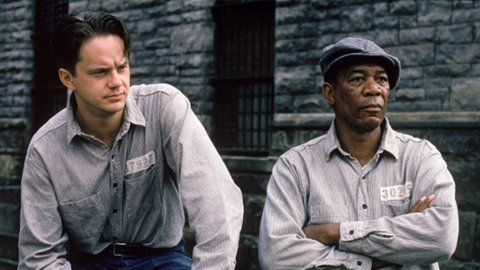

Merhaba! Ben Kaan Korkmaz! Izmir Yuksek Teknoloji Enstitusunde biyomuhendislik hazırlık sınıfı ogrencisiyim. 20 yasındayım. Enstitumun icinde ki yurtta kalıyorum. Okulumdaki bircok toplulukta aktıf rol alıyorum. Kitap okumayı, Film izlemeyi ve dizi izlemeyi seviyorum. Kodluyoruz'un egitimi ile bu yazıyı yazdım ve sizde bunu okuyorsunuz. Siz de kodluyoruzun egitimine katılabilirsiniz.
Film size sabırın nelere sebep olacagını anlatıyor. Akıcı bir film. Sıkılmayacagınızı dusunuyorum. Morgan Freeman'ın oyunculugu gercekten guzel. Acaba sabretmek bir seylere deger mi ? Izleyin ve gorun :)
E-mail : kaankorkmaz35262002@gmail.com